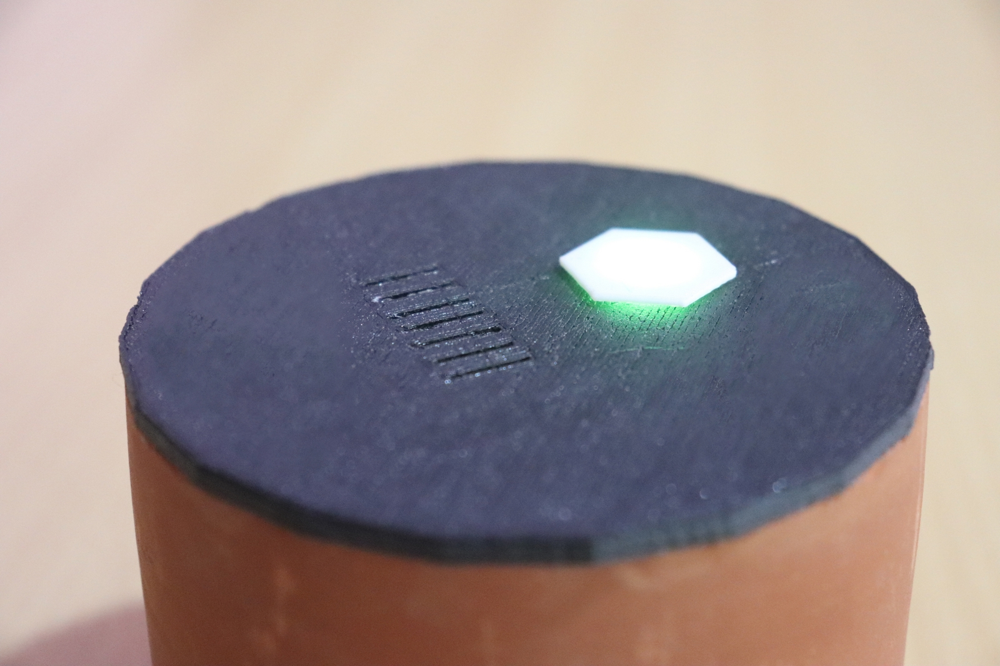
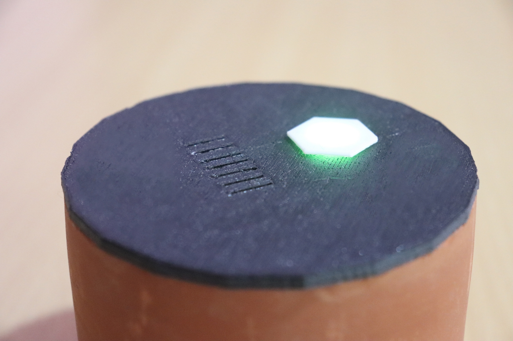

KYA is an upgraded version of the CO tracker which I made months before. The CO tracker is an outdoor device and can sense only CO levels. KYA is a personal assistant suitable for those who are allergic to air pollution. This is a handy device that can be kept in the living room, workspace, or any personal place we visit. Its job is to monitor the level of Carbon dioxide and Total Volatile Organic Compounds like Sulphur, Nitrogen, Ammonia, etc. KYA is very simple to use and it communicates with users via push notification. The KYA is enclosed with a clay cylinder with a 3D printed lid. The clay enclosure gives it a natural look and makes it sassy!
Project SAC is Smart Animal Collar which is an advanced animal tracking and activity monitoring device. SAC has features like GPS, LoRa, Accelerometer, Gyroscope, Temperature Sensor and Acoustic Sensor. Initially, SAC is designed only for elephants. Wild Elephants and its Musth is a big problem for the forest officials. Using the accelerometer and Gyroscope, the elephant's musth can be easily found out using machine learning. The reason for the acoustic sensor is for identifying the situation of the elephant rumbles. Currently, the project is at the initial fabrication stage.
Spectron 360 is a student startup working in sensor networks. The company aims in providing wireless data collection devices that collect data from various physical factors. Currently, the company focuses on Agriculture and manufacturing industries. I helped them on the hardware side like PCB Designing and Choosing connectivity for the devices.
created with
Nicepage .